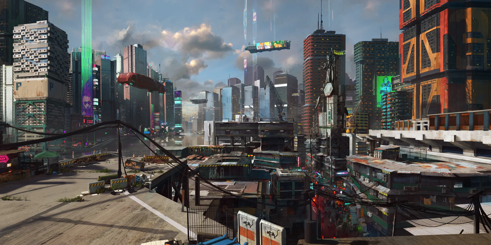

Watson
Watson is used to be the beating heart of the city, but now a days watson is one of the poorest discritricts in the city. Do to the interfierence of corporation living standards have fallen, but if you want to visit Watson we insist that you stay in inside the sub distrit of little china to avoid anyone belonging to the mealstrom.
For more...